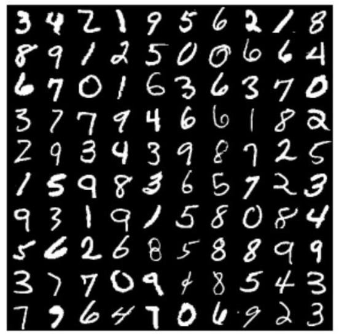
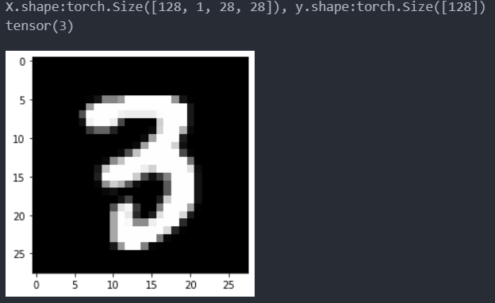
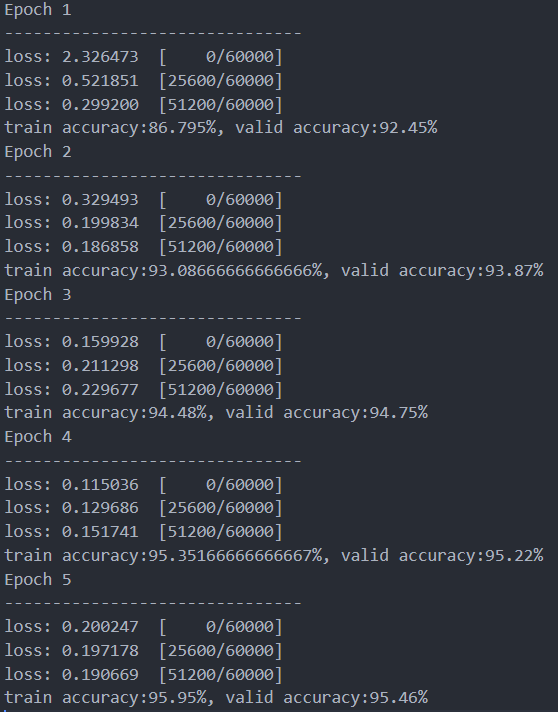

什么是机器学习与深度学习
机器学习和深度学习本质上是对数据的分析和处理，发现其中的规律、特征或模式，并将其用于分类、识别、预测等目的的一种技术。其中机器学习是利用大量的先验性知识手工提取特征，然后送入到传统的算法进行检测，比如支持向量机（Support Vector Machine, SVM) 、逻辑回归等；深度学习则往往不需要人工加入大量的先验知识，而是让神经网络模型 ( 比如多层感知机（Multilayer Perceptron, MLP）, 卷积网络（Convolutional Neural Networks, CNN ）等）见到大量的样本，并从中自动地归纳并提取出该种类型的样本的通用特征。
深度学习算法框架选择
深度学习算法方向众多，包括很多方面，比如
-
计算机视觉（Computer Vision, CV）：计算机视觉是通过算法模型使得计算机能够像人类一样去识别各种各样的物体，比如猫、狗、车等众多物体。该领域包图像分类、目标检测、语义分割、图像生成等众多子领域。
-
自然语言处理（Natural Language Processing, NLP）：NLP旨在让计算机能够理解人类的语言，包括不限于机器翻译、文本分类、文本生成等众多领域。其中最火热的OpenAI的ChatGPT模型就是一个非常大的语言处理模型，它能够在一定程度上理解人类的问题，并给出答案。此外，它还具备文本总结归纳、文本翻译、文本生成等能力。
-
信号处理（Signal Processing）：信号处理是一种通过对信号进行处理和分析来提取信号特征的算法。主要包括语音识别、脑电波信号检测、雷达信号检测、机器运转故障检测等。其中脑电波信号检测可能是未来发展的一个大方向，比如马斯克创办的Neuralink就是主打创造微型的侵入式设备来获取高信噪比的脑电信号，为算法精准地识别到各类脑电信号提供了可能性，从而实现各种各样的应用，比如利用意念精准快速地打字、交流，意念移动物体等超科幻任务。
-
强化学习（Reinforcement Learning, RL）：强化学习是一种通过与环境交互来学习如何做出决策的机器学习方法。它主要应用于游戏、机器人控制、自动驾驶等领域。
算法方向
深度学习是一门涵盖广泛的领域，其中包含着许多不同的子领域和技术。因此，选择一个合适的子领域并投入深入学习是非常重要的。但是不同的子领域之间也存在一定的联系和迁移性。例如，计算机视觉中的卷积神经网络（CNN）可以应用于语音识别中的声学模型，以及检测脑电信号等应用；自然语言处理中的循环神经网络（RNN）可以应用于时间序列预测中的模型。因此，在学习一个子领域的同时，也可以关注其他领域的发展和应用，以便更好地掌握整个深度学习领域。
手写数字数据集MNIST介绍
手写数字数据集MNIST是一个常见的数字图片数据集，其包含了大量手写数字的灰度图像，每张图像的大小都是28x28像素。MNIST数据集有60000张图像用于训练和10000张图像用于测试，其中每张图像都被标记了对应的数字（0-9）。这个数据集非常简单，常常作为初学者的第一个 “Hello World” 项目。 
上手操作
为了方便初学者更好的学习，本项目采用编辑器VSCode和Python语言编写。
导入基本库，并加载MNIST数据集
import torch
import time
import torchvision
from torch.utils import data
from torch.autograd import Variable
from torchvision.datasets import mnist
import matplotlib.pyplot as plt
from torch import nn
import numpy as np
import itertools
'''固定随机种子，使得程序结果尽可能保证复现效果'''
seed = 1
torch.manual_seed(seed)
'''MINIST数据集预处理'''
data_tf = torchvision.transforms.Compose(
[
#将原始数据转为tensor
torchvision.transforms.ToTensor(),
# z-score 归一化，把MNIST中图片的像素分布拉回到 标准正态分布 N ~ (0, 1)
torchvision.transforms.Normalize([0.1307],[0.3081]),
]
)
'''下载数据集'''
data_path = 'F:\\zhendianyuanzi_linux\\dataset\\images' # 自定义图片下载存放路径
train_data = mnist.MNIST(data_path, train=True, transform=data_tf, download = True)
test_data = mnist.MNIST(data_path, train=False,transform=data_tf, download = True)
然后我们查看一下train_loader中的第一个batch中存放了什么
'''创建dataloader'''
batch_size = 128 #这里我们定义一个batch中存放128张图片
train_loader = data.DataLoader(train_data,batch_size=batch_size,shuffle=True)
test_loader = data.DataLoader(test_data, batch_size=batch_size,shuffle=False)
'''查看train_loader'''
for batch, (X, y) in enumerate(train_loader):
#打印第一个batch中的shape
print('X.shape:{}, y.shape:{}'.format(X.shape, y.shape))
#显示第一batch中的第一张图片，和打印其对应的标签
plt.imshow(X[0, 0], cmap = 'gray')
print(y[0])
break
运行这一行程序后，结果如下图所示。X表示一个batch中的样本，其shape为（128, 1, 28, 28），表示一个batch中一共有128个张图片，每张图片的通道数为1，每张图片对应的像素点个数是28x28。因为图片是灰度图像，所以只有1个通道，如果图片是彩色的，那么图片就有3个通道（即RGB）。y表示一个batch中样本所对应的标签，其值范围为从0到9。并且我们还把该batch中的第一张图片打印了出来，该图片是数字3，其对应的标签也是3。在读者的电脑上运行的时候，所显示的图片可能不是数字3，而是其他的数字。这是因为在这一句话中train_loader = data.DataLoader(train_data,batch_size=batch_size,shuffle=True)，我们开启了shuffle，值为True，这会让batch中的样本随机打乱，不固定。对于训练集train_loader中的样本必须要随机打乱，这样才能让模型更好地学习，并收敛。 
接下来我们定义网络模型结构，网络模型初步选择多层感知机（MLP）。
'''定义网络结构'''
class MLP(nn.Module):
def __init__(self, hidden_dim, class_num):
super(MLP, self).__init__()
self.fc = nn.Sequential(
nn.Flatten(),
nn.Linear(28*28, hidden_dim),
nn.Sigmoid(),
nn.Linear(hidden_dim, class_num),
)
def forward(self, x):
out = self.fc(x)
return out
hidden_dim = 64 #隐藏层神经元个数
class_num = 10 #由数字0到9，所以一共是10个类别
device = 'cuda' #使用 GPU设备，如果要使用cpu，请更改为 'cpu'
model = MLP(hidden_dim, class_num).to(device) # 把模型从内存中搬运到GPU中运行
print(model)
该模型的结构如下图所示

定义训练函数train，和验证函数valid
def train(model, dataloader, loss_fn, optimizer, device):
'''模型训练'''
model.train() #很重要，开启模型的训练模式，保证batchnorm和dropout的参数是进行训练计算的
loss_sum = 0; num_batches = 0
y_true = []; y_pred = [] # y_true 和 y_pred 分别是真实的标签和模型预测的标签
for batch, (X, y) in enumerate(dataloader):
'''把图片喂给模型'''
X = X.to(device)
y = y.to(device)
pred = model(X)
_loss = loss_fn(pred, y)
'''反向传播，更新模型参数'''
optimizer.zero_grad()
_loss.backward()
optimizer.step()
'''自定义变量参数更新'''
loss_sum += _loss.item()
num_batches += 1
y_true.append( y.cpu().numpy())
y_pred.append( pred.argmax(1).cpu().numpy())
'''每经过200个batch就打印一次损失 '''
if batch % 200 == 0:
loss, current = _loss.item(), batch * len(X)
print(f"loss: {loss:>7f} [{current:>5d}/{len(dataloader.dataset):>5d}]")
'''展平, 并将List变为Numpy数组'''
y_true = np.array(list(itertools.chain.from_iterable(y_true)))
y_pred = np.array(list(itertools.chain.from_iterable(y_pred)))
return loss_sum/num_batches, y_true, y_pred
def valid(model, dataloader, loss_fn, device):
'''模型验证 '''
model.eval() #很重要，固定模型中的batchnorm和dropout，不然在验证阶段模型的参数会变动。
loss_sum = 0; num_batches = 0
y_true = []; y_pred = []
with torch.no_grad(): # 验证阶段要禁止梯度的传播
for batch, (X, y) in enumerate(dataloader):
'''把图片喂给模型'''
X = X.to(device)
y = y.to(device)
pred = model(X)
_loss = loss_fn(pred, y)
'''自定义变量参数更新'''
loss_sum += _loss.item()
num_batches += 1
y_true.append( y.cpu().numpy())
y_pred.append( pred.argmax(1).cpu().numpy())
'''展平, 并将List变为Numpy数组'''
y_true = np.array(list(itertools.chain.from_iterable(y_true)))
y_pred = np.array(list(itertools.chain.from_iterable(y_pred)))
return loss_sum/num_batches, y_true, y_pred
定义超参数、损失函数和优化器。
lr = 1e-3 #初始学习率设置
max_epoch = 5 #训练迭代次数
loss_fn = nn.CrossEntropyLoss() #使用交叉熵损失
optimizer = torch.optim.Adam(model.parameters(), lr=lr) #使用Adam优化器优化模型参数
开始训练。为了更加直观的学习，我们把MNIST的测试集当做验证集来使用。注意在实际中，验证集和测试集是要分开使用的，在后面的章节中我会详细地介绍训练集、验证集、测试集三者之间的关系。
for t in range(max_epoch):
print(f"Epoch {t+1}\n-------------------------------")
train_loss, train_y, train_pred_y = train(model, train_loader, loss_fn, optimizer, device)
valid_loss, valid_y, valid_pred_y = valid(model, test_loader, loss_fn, device)
train_acc = sum(train_y == train_pred_y)/len(train_y)*100
valid_acc = sum(valid_y == valid_pred_y)/len(valid_y)*100
print("train accuracy:{}%, valid accuracy:{}%".format(train_acc, valid_acc))
训练的结果如下图所示，训练到第5个epoch后，发现验证集的准确率达到了95.46%，效果看起来还可以接受。如果想要获得更好的准确率，可以尝试使用不同的超参数组合，例如MLP模型隐藏神经元中的个数，学习率、最大训练迭代次数等。 
在上一节的手写数字识别入门中我们使用了多层感知机来识别手写数字图片，实现了不错的分类效果，MLP在深度学习中经常被使用，在这一节中，笔者将介绍什么是MLP。 MLP是多层感知器（Multi-Layer Perceptron）的缩写，是一种基于前馈神经网络（Feedforward Neural Network）的机器学习模型。它通常由多个全连接层组成，每个全连接层都包含多个神经元，每个神经元都与前一层的所有神经元相连，并通过激活函数对输入进行非线性变换。
神经元
首先让我们观察一下一个单独的神经元，如下图所示

其中 是 图片展平后的1维向量中的第 i 个点，我们假设这个1维的向量的长度为m。 是神经元对感知到的第 i 个点的权重；b 表示该神经元的偏置。 和 b 表示该神经元的参数，这些参数的值的大小由反向传播更新获取。 表示该神经元的激活函数。
激活函数
激活函数有很多种，常见的有Sigmoid、ReLU、ELU、GELU等。这里我们介绍Sigmoid激活函数，这个激活函数在上一节 手写数字识别入门 中用到了。公式（2）是Sigmoid激活函数的数学表达式，用来激神经元，也就是把神经元的线性输出转变为非线性。 Sigmoid函数图像如下图

MLP模型解析
在手写数字识别入门中我们利用python程序成功地让MLP获得了识别手写数字的能力，并达到了95.46%的准确率。那时我们先把28x28的图片展平为一维的向量，即784个点，这784个点和隐藏层中的每一个神经元都连接上。与此同时，并利用Sigmoid函数激活隐藏中的每一个神经元。最后，因为我们是分类问题，一共有10种类别，所以此时输出层中一共有10个神经元，这10个神经元和隐藏层中的每个神经元都相连。这样当我们的MLP模型经过训练后，就能够实现手写数字的识别。非常重要的一点是，隐藏层中的神经元都使用了Sigmoid函数激活，而输出层中的神经元在我们自己定义的MLP模型中没有加入激活函数。其实这是我们使用了torch中的nn.CrossEntropyLoss()函数。torch中的nn.CrossEntropyLoss() 中不需要手动将模型输出进行 softmax 变换，因为这个函数会自动进行 softmax 变换。因此，只需要将模型的输出和真实标签作为输入传递给 nn.CrossEntropyLoss() 函数即可。
在 多层感知机（MLP）解析 一文当中，我们详细地介绍了什么MLP模型的框架模型，此外我们还提到了一个重要的函数——torch中的nn.CrossEntropyLoss() 。这个就是在分类问题中经常用的损失函数——交叉熵损失。在介绍交叉熵损失之前，我们先补充一些基本知识。
Softmax函数
Softmax 函数是一种将向量映射为概率分布的函数，常用于分类任务中。它将一个 维的向量 作为输入。softmax 函数的计算方式如下：
其中， 表示向量 的第 个元素， 表示向量 的维度。softmax 函数将向量 中的每个元素 进行指数运算，然后将所有指数的和作为分母，每个指数除以分母作为分子，即可得到每个元素的 softmax 值，即
我们再重新看一下这个MLP模型。其输出层中的每一个输出神经元都有一个输出值。softmax函数会把每一个输出值压缩到0到1的区间，并使得所有的被压缩后的的值之和等于 1，即式（2）所示。softmax 函数的输出可以被解释为一个概率分布，其中每个元素的值表示该元素对应类别的概率。在分类任务中，通常将 softmax 函数的输出作为模型的预测概率分布。
one-hot编码
one-hot 编码是一种将离散变量表示为向量的方法，常用于机器学习和深度学习中。但是我们不能直接把这种离散的标签用于训练，而是首先需要这些离散的标签转为向量。怎么转换呢？我们知道手写数字一共有10个类别（标签），如下表中的第一行所示。在 one-hot 编码中，每个离散的标签需要被转换为一个向量，向量的长度为类别的个数，我们有10个类别，所以向量的长度为10。并且每个向量中中仅有一个元素为 1，其余元素为 0，这个元素为1的位置对应于该标签的序号；比如标签为2排在第3位，那么其对应的one-hot 向量 为 0010000000，依次类推就可以得到其他标签所对应的one-hot向量。

负对数似然损失（negative log-likelihood loss, NLL loss）
NLL loss以用于衡量模型输出的概率分布与真实标签之间的差异。假设有 个类别，模型输出的概率分布为 ，其中 表示输入样本属于第 个类别的概率，真实标签所对应的one-hot向量 。则多分类问题中的NLL loss可以被定义为 NLL loss的物理意义是，模型预测向量 和真实标签所对应的向量 越相近，损失函数的值越小，表示模型的预测结果越接近真实标签。
现在让我们用一个具体的实例来看一下NLL loss是怎么计算的。比方说，当前我喂给MLP模型一个手写数字为3的样本，那么其对应的标签 就是，然后这个MLP模型的输出经过softmax变换后所得到的向量为 ，假设此时 为，然后就可计算出 取了log后的值，从而就可以计算出MLP模型在这个样本上的NLL损失为0.4194。 表示矩阵的逐元素相乘(elemetwise multiplication)。这就是NLL loss 的计算，NLL loss的值越小，说明模型的预测结果越接近真实标签。
交叉熵损失
交叉熵损失（Cross Entropy Loss）是一种广泛用于分类问题的损失函数，它的主要思想是通过比较模型的预测值与真实标签之间的差异，来度量模型的性能。在分类问题中，交叉熵损失通常用于衡量模型的输出与真实标签之间的差异。它的计算方式如下：
-
首先，将模型的输出通过 softmax 函数转化为一个概率分布，即所有类别的概率之 和为 1。
-
然后，将真实标签转为one-hot编码。
-
最后，计算模型输出的概率分布与真实标签的 one-hot 编码的NLL loss。这个loss值可以用来度量模型输出与真实标签的差异，即模型预测值与真实标签之间的距离。
这样我们就获得了交叉熵的loss，然后就可以根据这个loss用于模型参数的训练更新。
什么是反向传播
反向传播（Backpropagation）是一种用于训练神经网络的优化算法，它通过计算损失函数对神经网络参数的梯度来更新参数，从而最小化损失函数。反向传播算法是一种基于梯度下降的优化算法，它可以有效地优化多层神经网络中的参数，让模型具备学习能力。
Sofmax求导
我们有 模型的逻辑输出 , Softmax的输出为
然后我们要求解 ， 即sotmax的导数。Softmax的导数可以用Jacobian矩阵来表示，如下式所示。
我们首先求解 。 但是因为有指数e，不好求导，为了方便求导，可以先加入log (默认log的底数为e) 即
然后我们求解
因此有。 所以我们要求下面的式子
之后我们就可以得到
最后我们就可以得到, sotfma的导数。表达式如下：
反向传播的步骤
让我们继续以这个MLP为例，来详细解析反向传播算法的具体计算过程。

-
前向传播：将展平为1维的图片 送入到MLP中去，计算出MLP的输出结果 。这个过程用公式来表示就是 其中 表示输入层和隐藏层之间的权重参数， 表示隐藏层中的这64个神经元的偏置。表示隐藏层所有神经元的输出，是一个64维度的向量。 表示输入层和隐藏层之间的权重参数， 表示隐藏层中的这10个神经元的偏置。表示输出层所有神经元的逻辑输出，在Pytorch中使用nn.CrossEntropyLoss()时，一定要注意把逻辑输出 送给交叉熵函数，因为该函数的内部已经调用了softmax函数。 ，， 和 都是通过训练更新得来的。 是激活函数。
-
计算梯度
要想计算计算梯度，那么必须要获取到损失函数的损失值。我们在上一节中已经详细地解说了pytorch中的交叉熵函数包括3个部分，即 首先把MLP的逻辑输出通过sotfmax函数激活，得到概率预测值 ，然后将真实标签转换为one-hot编码 ，最后计算 和 之间的NLL损失，如下式所示。
然后我们就可以通过NLL loss来获取到梯度值。 那么求谁的梯度呢？因为我们要优化的是 的参数值，所以当然试求 NLL Loss对 的梯度。矩阵的偏导数求解可以使用在线工具Matrix Calculus求解。这里只展示出 损失 对 的偏导数 来初步地理解梯度是如何计算的，因为损失对其他参数的偏导的计算方法都是一样的。
-
首先求下式偏导 简单易得
-
然后我们在上一步中已经了解了 softmax 的 求导，并且 就是 ， 因此我们直接有
-
然后我们要求 此时为了求出 ， 我们首先需要把 展开来看，如下所示 因此我们有 故而可以求得
之后我们就可以根据上面已经求出的导数，并利用连式法则求解
最后我们就得到损失对W的偏导数
-
-
最后通过获得的梯度来更新模型的参数
同样的，这里只介绍对参数 W 的过程，因为模型对其他的参数 W1, b的更新过程是类似的。
- 在利用pytorch定义好自己的模型后，模型参数 一开始是都是随机生成的，其随机性由pytorch的随机种子来确定。一般来说，对于全连接层，pytorch官方默认利用 均匀分布 来生成权重 W 的参数。在生成好 W 的参数后，这时如果直接用刚初始化的模型去预测手写数字的话，准确率是很低的。
- 接着我们把一张张的图片送入到模型当中去，然后会得到损失，进而我们可以得到损失对 W 的梯度，从而去更新 W 的参数，如下式所示，其中 lr 表示学习率，这是一个需要调节的超参数。（注意，这只是一个最简单形式的梯度下降更新过程，实际应用中会使用到更为复杂的优化器，比如我们在 手写数字识别 那一篇文章当中用的是Adam优化器）。
- 之后不断地迭代去更新模型的参数，模型就能能够越来越准确地识别出手写的数字。
记录一些杂事
今天在用 NATAPP 远程连接实验室那台 windows电脑出了个小毛病，一直报这个错误 kex_exchange_identification: Connection closed by remote host。之前在linux系统上好好的，后来发现原来是在windows上 ssh服务没有开启。 为了能够成功在windows连接上 ssh，需要进行以下步骤。
SSH服务在自己本地的电脑和远程的windows电脑都要安装并开启
Windows检查SSH 服务是否安装
用管理员的方式 打开 windows PowerShell，然后运行如下指令
Get-WindowsCapability -Online | Where-Object Name -like 'OpenSSH*'
发现我的 openssh 之前安装过，如果windows之前没有安装openssh的话， state应该是 NotPresent 的。
安装 SSH client 和 SSH service 服务
运行如下指令安装ssh
# Install the OpenSSH Client
Add-WindowsCapability -Online -Name OpenSSH.Client~~~~0.0.1.0
# Install the OpenSSH Server
Add-WindowsCapability -Online -Name OpenSSH.Server~~~~0.0.1.0
开启 SSH 服务
这一步很重要，之前我就遗漏了这一步，从而导致我在连接远程实验室电脑的时候出现了 kex_exchange_identification: Connection closed by remote host 这个错误。
# Start the sshd service
Start-Service sshd
# OPTIONAL but recommended:
Set-Service -Name sshd -StartupType 'Automatic'
# Confirm the Firewall rule is configured. It should be created automatically by setup. Run the following to verify
if (!(Get-NetFirewallRule -Name "OpenSSH-Server-In-TCP" -ErrorAction SilentlyContinue | Select-Object Name, Enabled)) {
Write-Output "Firewall Rule 'OpenSSH-Server-In-TCP' does not exist, creating it..."
New-NetFirewallRule -Name 'OpenSSH-Server-In-TCP' -DisplayName 'OpenSSH Server (sshd)' -Enabled True -Direction Inbound -Protocol TCP -Action Allow -LocalPort 22
} else {
Write-Output "Firewall rule 'OpenSSH-Server-In-TCP' has been created and exists."
}
最后附上ssh安装成功效果图
测试远程ssh连接
我们首先在远程的实验室的那台windows电脑上下载 NATAPP 这个软件，然后按照官网的教程配置并运行，会出现如下的命令框。 我们只需要关注 Forwarding 中的内容即可
这个里面的内容包括了远程映射的ip地址和端口号
之后我们在本地命令行运行
ssh 远程电脑的用户名@远程的地址-p 远程的端口号
之后会提示我们需要输入远程实验室windows电脑的密码 在输入完密码之后就完成ssh远程连接
利用Vscode进行ssh连接
打开VScode，安装插件 Remote - SSH
安装好后会在 vscode的最左下角，出现一个连接标志,然后我们点击这个标志
出现
点击 Connect to Host， 之后点击 Configure SSH Hosts，会出现
之后我们点击第一个，出现如下配置，这是我配置好的ssh文件

然后 把HostName， User， Port 根据需要修改成自己的配置，并保存。User就是远程电脑的用户名，我的是admin
继续点击vscode最左下角的那个ssh连接图标，出现

点击 labcompupter后，vscode会提示我们输入密码，输入远程电脑的登录密码即可。最后附上连接成功的效果图。